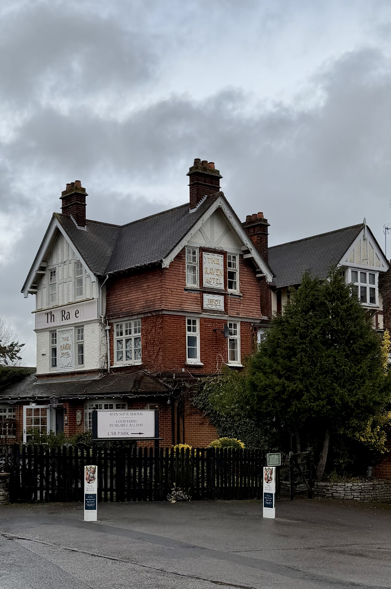
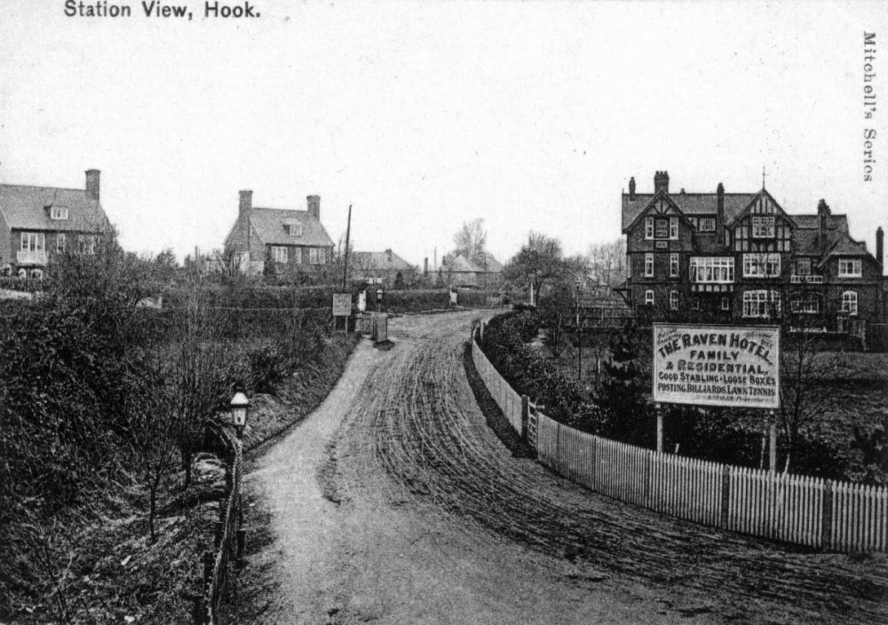

The Raven Hotel sits beside Hook Station, a deliberate placement when it was built in 1903 to capture railway passengers rather than coach travelers. This wasn't a new establishment — it was a relocation, carrying forward the name and license of a Tudor coaching inn that had served the London Road since 1572. When the railways killed coaching traffic, the owners moved the business to where the passengers were. The old building became a private house. The new one — this one — became a hotel for the railway age, and has operated continuously ever since.
Built1901–1903
Opened1903
StyleTudor Revival
Current OwnerGreene King

The Raven Hotel's Tudor Revival frontage on Station Road — built 1903 to look historic while serving modern railway passengers. The architectural style deliberately echoes traditional coaching inns, creating continuity with the Raven name's 300-year heritage on London Road.
A Strategic Relocation
By the late 19th century, the Old Raven on London Road was dying. The Tudor coaching inn had thrived for over three hundred years on passing coach traffic, but Hook Station opened in 1883, and long-distance travelers switched to rail. An inn positioned half a mile from the station, on a road that no longer carried the main traffic, couldn't sustain itself on local custom alone.
The May family — Thomas and Charles May, brewers from Basingstoke who owned the Old Raven — made a decisive move. In 1901, they purchased land adjacent to Hook Station and commissioned a new hotel. This would be a purpose-built establishment for the railway age, positioned to serve passengers alighting from trains rather than coaches. Construction was swift: by 1903, the new Raven Hotel stood completed on Station Road.
(Hampshire Field Club Newsletter No. 71)
Architecturally, the new building was an Edwardian structure in Tudor Revival or "Tudorbethan" style — red brick with half-timbered gables, mimicking the appearance of a traditional manor house or old inn. The design was deliberate: it gave visual continuity with the Raven name's historic associations while housing modern facilities. The building displayed "1901" prominently on its facade, commemorating its construction date. Some sources describe it as initially being a manor house converted to a hotel, but essentially it was purpose-built by the brewery to be a hotel from the start.
(Hampshire Field Club Newsletter No. 71)
The transfer of the business was carefully managed. The old inn's license was valid only until October 1902, conditional on the new hotel opening. Once the Station Road building was ready, the license moved, and the old coaching inn closed to the public. In November 1902, the old building was auctioned — fittingly, the auction was held in the new Raven Hotel, with the successor presiding over the sale of its predecessor.
(Hampshire Field Club Newsletter No. 71)
The Raven name, the business, and the license all moved to Station Road. What remained was a new hotel positioned to thrive in the railway era — close enough to the platform that travelers could walk there in minutes, large enough to offer proper lodging, and styled to look like it had always been there.

The Raven Hotel in its early years, seen from Station Road looking toward Hook Station. The advertising board captures the transition perfectly — "Good Stabling · Loose Boxes · Posting" alongside "Billiards · Lawn Tennis" — a railway-age hotel still catering to horse-drawn traffic.
Postcard from Mitchell's Series, c. early 1900s
Through War and Change
The Raven weathered two World Wars. There are no notable records of damage or military use, so it presumably continued operating as a hotel and pub throughout both conflicts. By 1932, Hook had grown large enough to be established as a civil parish separate from Newnham, and establishments like the Raven Hotel and the White Hart were central to village social life.
Post-war, the rise of automobile travel brought new custom. The Raven's position near both the railway station and the A30/London Road — and later the M3 motorway junction — made it accessible for both rail passengers and motorists. The hotel adapted, serving tourists, business travelers, and locals alike.
Over the decades, ownership changed hands through brewery consolidations. The May family's brewery, which had built the hotel, was eventually absorbed into larger operations, and the Raven ultimately became part of the Greene King pub and hotel chain. Along the way, the building was renovated multiple times, including a significant refurbishment around 2011 that updated facilities while attempting to retain period features — wooden beams, fireplaces, and the Tudor Revival character.
The Raven Today
Today, the Raven Hotel operates as part of Greene King Inns, offering 41 guest rooms and a pub restaurant. The building retains its Tudor Revival exterior — half-timbered gables, red brick, the date "1901" still visible — and markets itself on "good old-fashioned hospitality" combined with modern amenities. The interior preserves some period features: exposed beams, a fireplace, photographs and memorabilia commemorating the hotel's history.
(Greene King Inns: Raven Hotel)
The Raven's story is fundamentally about adaptation. When coaching died, the business moved. When railways dominated, the hotel positioned itself beside the station. When motor travel became prevalent, it leveraged its location near major roads. Each era demanded something different, and the Raven — or at least the name and concept — survived by changing location, architecture, and clientele while maintaining continuity with its past.
What's unusual is that both incarnations still exist. You can walk from Old Raven House on London Road — the Tudor building with its 1572 timber frame, now a care home — to the Raven Hotel on Station Road, built in 1903 in a style meant to echo the old while serving the new. Together, they tell the complete story: how a business three centuries old navigated the transition from coaching to rail, how it chose survival over stasis, and how Hook itself transformed in the process.